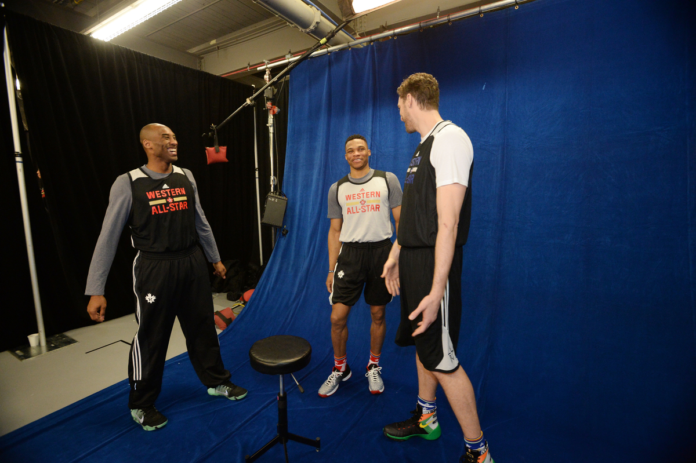

The Players Home
The Players HomeEmotions. All weekend, people kept asking me about them. Am I sad? Am I nostalgic? Am I anxious? But I’m none of those things. I’m in a good place. I’m observing. I’m taking it all in.
He entered the league as Kobe Bryant: the innocent 18 year old, fresh out of high school and eager to prove himself. Now, 20 seasons, 18 All-Star games, 15 All-NBA teams, 1 MVP award, and 5 championships later, he is ready to leave the league as Kobe Bryant: one of the all time greatest and most clutch players the game has ever seen.
These are moments from his final All-Star weekend as a player.
Photos by Andrew D. Bernstein
